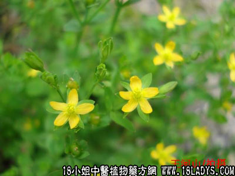

田基黄(中药材植物名:田基黄)(植物科目:金丝桃科)

别名：地耳草。
生长环境：本品为一年生草本，稻田基或潮湿草地上常生。
分布：新西兰、澳洲、日本、印尼和我国南部。
入药部分：全草。
采集期：夏、秋。
自采地点：田园、菜地、岗边。
性味：性平、味甘淡、气微香。
功能：情肝解毒、行气解郁、消肿、散瘀。
主治、用量和用法：1、肝郁气滞痛：干用1至2两，清水煎服；2、疮科：生用适量，加片糖，捣烂外敷患处；3、皮肤生蛇，配伍用；4、蛇咬伤：生用适量，捣烂炖酒服，将渣敷伤处；5、跌打、配伍用。
验方1：（治疗黄疸经验方）田基黄、鸡骨草、金钱草、每味1至2两，以水四碗，煎成一碗，日服一次，连服三、四田，以后隔日服一次，至愈为止。
（方解）本方田基黄，鸡骨草为民间治疗黄疸有效的药物，鸡骨草能利尿祛湿、去黄疸，田基黄解肝郁行气、止痛、利水、清热毒、去黄疸。选用一味，对防治本病已有效果，两味合用，对治疗肝胆郁热作用更强，加以金钱草泻膀胱湿热，功效尤伟。
（方歌）治疗黄疸有验方，鸡骨草配田基黄，再加金钱清湿热，肝胆郁结总能安。
验方2：（治疗皮肤生蛇方）：田基黄、六耳苓、一炷香、蛇总管、七星剑，各5钱，清水四碗，煎成一碗服，渣再用清水适量，煎水外洗患处。
（方解）皮肤生蛇，为风热湿毒留于表皮，发生丘疹、水泡、红肿等症状，自觉甚痒；或体表无症状而自觉甚痒者。本方田基黄清热去毒，六耳苓清热散毒止痒，蛇总管清热去毒、一炷香、七星剑祛风散毒止痒。内服外洗，功效显著。
（方歌）皮肤生蛇有洗方，六耳苓合田基黄，一炷七星蛇总管，解毒止痒恙自安。
参考资料：《广东中医》（1960.5）内记载：田基黄治传染性肝炎70例，黄疸安全消退仅需6～8天，症状消失多见于疗后一周内，二种主要肝功能测验（麝脑）平均转阴日数分别为16.45个9.2天，转一般报告为短，治愈率87.1%，平均治愈日数12.32天，无恶化或死亡。该药除少数病例引发多梦外，未发现不良副作用，孕妇不禁忌，有促进食欲及显著的利尿作用。
《广东省中医验方交流汇编》内记载：治眼起点上膜外治方：田基黄、犁头草、萝卜菜心，擂虾公肉敷之。
《广州市中医验方选集第一集》石溪医院治乳痈不回验方，田基黄捣烂敷数次即愈。
《广东中医》（1962.4）佛山专区第一人民医院、中山医学院佛山分院报告：1、对田基黄制剂抑菌作用药理动物实验及临床各科某些疾病等作了初步探讨；2、从田基黄制剂进一步改为流浸恙，呈酸性（PH1~2）处里过程中可提出一种黄色无定型之粉末定名为甲素，并从甲素中，提出乙素及乙素1.2；3、田基黄乙素对常见11种细菌抑菌作用试验，发热期对牛型结核杆菌（元毒株）、肺炎双球菌、全黄色葡萄球菌、猪霍乱杆菌等均具有不同浓度的抑菌作用，特别对牛型结核杆菌敏感作用较明显，对伤寒甲乙未见有抑菌作用；4、药物动物试验，对小白鼠较成人内服量大100倍未见有急性中毒现象。对离体兔肠的作用，低浓度是可见节律性收缩增强，高浓度是出现痉挛性收缩。对蟾蜍心脏于低浓度时，心肌显示先兴奋而后抑制，高浓度出现心脏纤维颤动而至心跳停止。对狗血稍有下降，但影响不大；5、对传染性肝炎临床观察，内科组70例治黄疸型效果较为显著，退黄时间平均为6～8天，肝功能恢复平均日数为12.3天，为一例恶化或死亡。小儿科组21例治疗与内科组疗效相似，但肝功能恢复时间较晚（往往延至3周）；6、对急性脊髓前角灰白质炎46例临床疗效观察，其退热时间，瘫痪继续进行情况及死亡率降低等较单纯西医治疗组效果为佳；7、对流行性乙型脑炎15例力创疗效观察，平均退热时间为4.7天，临床主要症状消失平均时间为7天，脑脊液恢复正常时间平均为12.4天，于单纯中医治疗6例对照效果相仿；8、对伤寒病（小儿病例）治疗12例临床疗效观察，疗效很不规则，尚未能确实，有待今后进一步观察；9、对外科、皮肤科化脓感染，外用治疗，疗效不确。